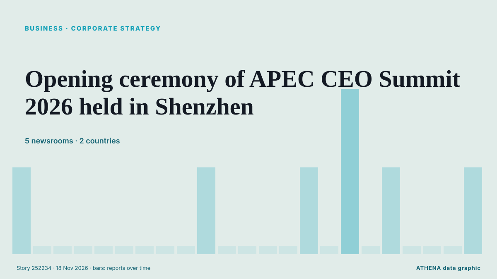

Entreprises et investissement
SponsoriséPrésenté par  Cybernetics and Artificial Intelligence Lab Welcome to the Cybernetics and Artificial Intelligence Laboratory, established at the Department of Business Administration of the National and Kapodistrian University of Athens. The lab is headed by Professor Dimitrios Thomakos. The lab aims to do research that can be published in top venues. Our research uses tools and methods of Artificial Intelligence, and lies in the following areas: - Forecasting - Decision making - Cyber security - Finance We are always looking forward to collaborating with exceptional students!
Cybernetics and Artificial Intelligence Lab Welcome to the Cybernetics and Artificial Intelligence Laboratory, established at the Department of Business Administration of the National and Kapodistrian University of Athens. The lab is headed by Professor Dimitrios Thomakos. The lab aims to do research that can be published in top venues. Our research uses tools and methods of Artificial Intelligence, and lies in the following areas: - Forecasting - Decision making - Cyber security - Finance We are always looking forward to collaborating with exceptional students!
Les titres sont affichés en anglais, tels que publiés.

Stratégie d'entrepriseOpening ceremony of APEC CEO Summit 2026 held in Shenzhen
The Asia-Pacific Economic Cooperation (APEC) CEO Summit 2026 opened Tuesday in Shenzhen, south China's Guangdong Province, bringing together business and political leaders from across the… de CGTN (China)
| 5 nov. | 111 |
|---|---|
| 6 nov. | 77 |
| 7 nov. | 33 |
| 8 nov. | 58 |
| 9 nov. | 108 |
| 10 nov. | 121 |
| 11 nov. | 102 |
| 12 nov. | 95 |
| 13 nov. | 63 |
| 14 nov. | 38 |
| 15 nov. | 35 |
| 16 nov. | 91 |
| 17 nov. | 46 |
| 18 nov. | 0 |
‘Grand Theft Auto VI’ Surpasses Estimated $1.5 Billion In Revenue—Two Days Before Release
“Grand Theft Auto VI” has already made $1.5 billion in pre-orders with just two days until the game is released, according to estimates by market data firm Sensor Tower. de Forbes Business
Avio's share price rises after Finland's Iceye launches €2 bn takeover bid
(ANSA) - ROME, 17 NOV - The share price of Avio climbed by 12% in early trading on Tuesday after Finnish satellite operator Iceye said it was making a two-billion-euro takeover bid for the Italian… de ANSA English
David Beckham sues after his fragrance is sold in gas stations and discount stores
David Beckham’s company is suing beauty group Coty for at least $41 million, alleging that sales of his perfumes in discount stores breached their licensing agreement and damaged his luxury brand. de The Independent
Iran, Oman, Uzbekistan FMs discuss North-South Corridor capacities
Tehran, IRNA – Foreign ministers of Iran, Oman, and Uzbekistan held a trilateral meeting in Muscat on Tuesday, November 17, to discuss and exchange views on the capacities of the North-South Corridor. de IRNA (English)
Trump administration targets further limits on skilled foreign workers
The US plans tougher green card rules for companies hiring foreign workers, with stricter recruitment checks, a 90-day job advertising requirement and restrictions on employers that have recently… de Livemint
Canadian Natural to acquire Advantage Energy in $1.8-billion Montney deal
Canadian Natural Resources will acquire Advantage Energy for C$2.53 billion (US$1.8 billion) including debt, adding about 79,000 boed of Montney and Charlie Lake production next to its Grande Prairie… de World Oil
Isomorphic Labs raises $5bn from Sequoia and Greenoaks for AI drug design
Isomorphic Labs, the Alphabet drug discovery company run by Demis Hassabis, has raised $5bn in a Series C round co-led by Greenoaks and Sequoia Capital. de The Next Web
Major steel, mining exhibition kicks off in Iran
Tehran, IRNA – The 23rd International Exhibition of Iran METAFO 2026 has opened in Tehran, bringing together around 450 companies from Iran and 16 other countries. de IRNA (English)
Wondermind Investor Lawsuit Against Selena Gomez and Co-Founders Dismissed
A federal lawsuit against Selena Gomez and fellow Wondermind co-founders Mandy Teefey and Daniella Pierson has been dismissed, the star’s litigator Mathew S. de Variety
GXO announces 2030 financial targets at Investor Day
GXO Logistics has announced new financial targets for 2030, outlining plans to increase revenue and profitability through its logistics operations, automation and artificial intelligence. de Container News
Sony defeats £2 billion UK claim over PlayStation Store pricing
Sony fought off a London lawsuit worth almost £2 billion that alleged the PlayStation maker’s “monopoly position” inflated prices for digital games, after a tribunal dismissed the claim in its… de Cyprus Mail
Marcos hands ASEAN chairmanship to Singapore
PHILIPPINE President Ferdinand R. Marcos, Jr. handed the Association of Southeast Asian Nations (ASEAN) chairmanship to Singapore on… de BusinessWorld
Diamondback to Buy Double Eagle’s Midland Stake for $5 Billion
Diamondback Energy agreed on Monday to buy Double Eagle’s 40% share of their Midland Basin partnership for cash and stock that Reuters valued at about $5.03 billion, a purchase that gives it a bigger… de OilPrice.com
J.P. Morgan upgrades UAE, Turkey to overweight, cuts Greece to neutral
The Wall Street brokerage said the UAE remained economically resilient as foreign inflows returned, while Turkey’s investment fund sector faced a crisis with Greek equities outperforming. de Free Malaysia Today
South Africa’s Telkom in Takeover Talks
MTN Group confirmed early talks to buy all of Telkom on 16 November 2026, with cash as the expected payment. de The Rio Times
Yangon Condo Raid Reveals Myanmar’s Cyber Scam Sector Thriving in Commercial Capital
Regime operation nets 106 suspects, signaling multibillion-dollar online fraud industry is spreading from borderlands to big cities. de The Irrawaddy
When is Amazon’s Black Friday 2026 sale? Plus the best early deals
There’s up to 65 per cent off already in Amazon’s early Black Friday sale. de Evening Standard (London)
Coca-Cola HBC confirms JSE listing
It also confirms that its long-mooted purchase of Coca-Cola Beverages Africa is on track for a 27 November completion. de Moneyweb
Woman tricks friend into giving her £25k for fake Lanzarote pub
Geraldine McGrath convinced her elderly friend to give her money over a five-year period, saying it would help fund retirement. de WalesOnline
Gulftainer and TiL plan 2.2m teu Jakarta terminal outside Pelindo's Priok estate
The 2.2m teu Marunda terminal that Gulftainer, MSC's Terminal Investment Limited and KCN plan would sit on KCN's 70-year ministry concession rather than on Pelindo's Tanjung Priok estate, and would… de Container Magazine
"I'd Work For Myself": How A Rejected H-1B Visa Changed Kunal Bahl's Life
After his H-1B visa was rejected in 2007, Microsoft suggested that Kunal Bahl return to India and work from its local office. de NDTV
Frictionless ASEAN trade seen boosting growth
THE International Monetary Fund (IMF) said it remains committed to supporting the Association of Southeast Asian Nations (ASEAN)… de BusinessWorld
Bharat Semi raises $24 million to develop intelligent sensors for AI
The India- and US-based startup is developing programmable sensors that integrate sensing and AI, targeting applications across robotics, vehicles, drones and consumer electronics. de Business Standard
Kosovo demands EU explanation over Serbian nationalist song at Brussels forum
Kosovo Prime Minister Albin Kurti said that his government banned the purchase, sale, import and export of electricity by Serbian companies, including. de N1 Serbia (English)
NCP(SP)’s Supriya Sule seeks ‘one formula for every state’ during delimitation
She added that ‘women’s reservation must be implemented during delimitation’. de Scroll.in
MSC Cruises to launch Singapore-based sailings from 2028, with voyages across Southeast Asia
Under a three-year partnership with the Singapore Tourism Board, MSC Orchestra will begin operating eight- to 12-night cruises from Singapore in late 2028, with stops in countries including Thailand… de CNA (Channel NewsAsia)
Tesla Cybercab orders open at $29,990 + $299/mo, only in Robotaxi zones
Tesla is now inviting “select customers” to buy a Cybercab for personal use at $29,990, but the car won’t move unless you also pay $299 a month for an “Autonomy Subscription.” And it only works… de Electrek
Canada pledges up to $392 million to Brazil-led forest fund
Canada pledged up to $392 million to a Brazil-led fund that uses investment returns to help conserve tropical forests and support communities. de UPI World News
Flagship Pioneering expands to UK with £100m AI-native lab
Flagship's UK investment marks another sign of turning tides for the UK life sciences sector, following prior big pharma funding pullouts. de Pharmaceutical Technology
Family Dollar Will Pay $63 Million for Inflated Price Claims
Dollar-store chain’s settlement with FTC and state officials comes after Guardian exposé of its pricing practices Discount store giant Family Dollar will pay $63m to settle claims by state and… de Guardian Business
Hungary plans to complete Paks II audit by year-end
Attila Sagodi, chairman of the board and CEO of Paks II, said Hungary’s new government is very interested in the project, but decision-makers do not yet have all the information they need. de TASS (English)
EU gives green light to UniCredit's takeover of Commerzbank
(ANSA) - BRUSSELS, 16 NOV - The European Commission said Monday that it has unconditionally given the green light to UniCredit's hostile takeover of Germany's Commerzbank. de ANSA English
Sofinnova closes second crossover fund at €725M for late-stage European biotechs
Sofinnova Partners has secured €725 million ($815 million) for its second crossover fund, which it said would fill the financing gap for late-stage European biopharma and medtech companies. de Endpoints News
Greece Plans New Funding to Modernize Street Markets
Development Minister Takis Theodorikakos says new financial support is being considered to help vendors upgrade equipment, cut operating costs and adapt to the green transition. de to vima